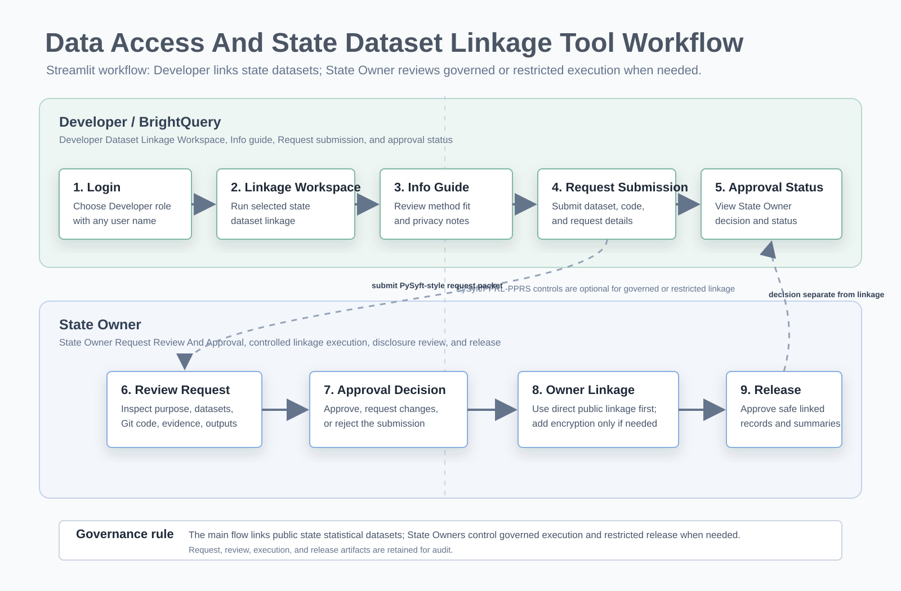

Data Access and Linkage Tool Understanding Document
A client-friendly explanation of the workflow, approach, roles, and linkage methods used by the Data Access and Linkage Tool, with public state statistical linkage as the main requirement.
Purpose
The Data Access and Linkage Tool supports state dataset linkage between Developer / BrightQuery users and State Owners. Public/non-restricted statistical linkage is the main path. Developers submit requests, select linkage methods, add Git code links, and run user-side linkage. State Owners review and approve when governance or restricted data sensitivity requires it.
Workflow Image

High-Level Workflow
- Developer logs in as Developer / BrightQuery.
- Developer selects datasets and chooses the requested linkage method.
- Developer submits a PySyft-style request with data asset, code asset, execution context, output policy, review notes, and Git code link.
- Developer can use the Linkage tab to run user-side linkage for selected datasets and methods.
- State Owner logs in as State Owner.
- State Owner reviews the PySyft-style request packet, code package, and linkage method.
- State Owner approves, asks for changes, or rejects the request.
- State Owner can run controlled linkage from the Linkage tab.
- Outputs are reviewed for disclosure risk.
- Linkage output remains in the separate Linkage tab; request approval remains a separate status and decision flow.
Overall Approach
Role Layer
Developer / BrightQuery submits requests and views outputs. State Owner reviews requests and approves governed execution when policy or sensitivity requires it.
Dataset Classification Layer
Public/non-restricted data uses direct shared keys. Restricted data can use privacy-preserving linkage when needed. Mixed data uses the least sensitive safe route.
Linkage Method Layer
Direct public linkage is the default method. PySyft governance and PPRL/PPRS encryption are optional controls for sensitive cases.
Governance And Release Layer
Requests capture the PySyft-style request packet: data asset, code asset, execution context, output policy, and review notes. State Owner approval controls governed execution and restricted release.
PySyft-Style Architecture
The app can reflect a PySyft-style code-to-data model when governance is required. Public statistical data can link directly; restricted data can use PySyft review and PPRL/PPRS-style encrypted matching so raw restricted data stays inside the owner-controlled environment.
All Linkage Methods
| Linkage Method | What It Does | Best Fit | Privacy Notes |
|---|---|---|---|
| Direct public key linkage | Joins public datasets using shared fields such as SOC, CIP, county, state, year, or program. | Public statistical data. | No encryption needed when data is public and approved for direct matching. |
| LLM-assisted linkage | Uses AI to review metadata and recommend keys, blocking fields, risks, and output structure. | Unfamiliar schemas or early planning. | Only metadata should be sent. Raw private rows and PII should not be sent. |
| PPRL/PPRS Bloom filter / hash embeddings | Encodes identifiers into privacy-preserving comparison structures before matching. | Optional restricted person-level linkage where fuzzy comparison is needed. | Raw identifiers should remain protected; encoded tokens are compared instead. |
| PPRL/PPRS salted hash + q-grams | Uses salted hashes and q-gram tokenization for approximate matching. | Optional restricted linkage with spelling differences, partial matches, or data quality issues. | Salt and tokenization rules should be owner-controlled. |
| Secure Multi-Party Computation (SMC) | Allows parties to jointly evaluate matching logic without exposing private inputs. | High-assurance multi-agency linkage. | Strong privacy model, but more complex to implement and operate. |
| Linkage Honest Broker (LHB) | A trusted neutral party receives approved tokens and returns cross-reference IDs. | Programs where a centralized trusted linkage agent is acceptable. | Broker governance, contracts, and audit rules are important. |
| Asymmetric key cryptography | Uses public/private key pairs so parties do not need one shared secret. | Multi-party settings where each site needs local key control. | Useful when key ownership and rotation must be separated by party. |
| PPRL/PPRS secure enclave / eyes-off execution | Runs linkage inside a controlled enclave where raw data is not visible to developers. | Optional restricted data requiring strong execution controls. | Supports code-to-data execution and output review before release. |
Method Selection Guide
| Data Situation | Recommended Approach |
|---|---|
| Public data only | Direct public key linkage |
| Public data with unfamiliar schemas | Direct linkage plus optional LLM-assisted metadata review |
| Restricted person-level data with identifiers | PPRL/PPRS salted hash + q-grams or PPRL/PPRS Bloom filter / hash embeddings |
| Restricted data across multiple agencies | PPRL plus State Owner controlled execution, SMC, or honest broker |
| Raw data cannot leave owner environment | PPRL secure enclave / eyes-off execution |
| Sites need separate key ownership | Asymmetric key cryptography |
| Governance requires neutral matcher | Linkage Honest Broker |
Output Controls
- Do not release raw restricted rows.
- Do not release direct identifiers.
- Prefer aggregate tables, pseudonymous IDs, match quality summaries, and dashboard-ready outputs.
- Review small cells and re-identification risk.
- Keep request, review, execution, and release records for audit.